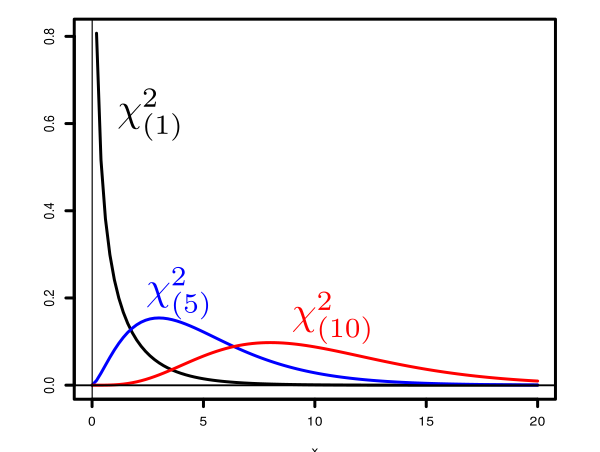
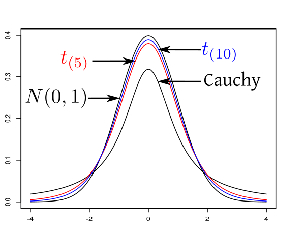

| Last updated on: Sun Jul 19 09:18:11 IST 2026 |
Proof: Recall from Probability I that mgf of each $X_i$ is $E(e^{sX_1})=e^{s^2/2}$ for $s\in{\mathbb R}.$
So the mgf of $\v X = (X_1,...,X_d)'$ is $$\begin{eqnarray*} E(e^{s_1X_1+\cdots+s_dX_d}) & = & E(e^{s_1X_1})\cdots E(e^{s_dX_d}) ~~\left[\mbox{$\because$independent}\right] \\ & = & e^{\frac 12(s_1^2+\cdots+s_d^2)} = e^{\v s'\v s/2} \end{eqnarray*}$$ for all $\v s=(s_1,...,s_d)'\in{\mathbb R}^d.$ So mgf of $A\v X + \v b$ is $$\begin{eqnarray*} E(e^{\v t'(A\v X+\v b)}) & = & E(e^{\v t'A\v X+\v t'\v b)})\\ & = & e^{\v t'\v b)}E(\v t'A\v X)\\ & = & e^{\v t'\v b)}E((A'\v t)'\v X)\\ & = & e^{\v t'\v b)}e^{(A'\v t)'(A'\v t)/2}\\ & = & e^{\v t'\v b+\v t' AA'\v t/2}, \end{eqnarray*}$$ as required. [QED] Since the MGF is defined over a neighbourhood of the origin (in fact everywhere), the MGF characterises the distribution. Thus, the distribution is characterised by $\v b$ and $AA'.$ Quickly recall from Mathematics II that any matrix of the form $A'A$ (for a real matrix $A$) is called a nnd matrix. Notation: Let $\v \mu\in{\mathbb R}^d$ be a fixed vector, and $\Sigma_{d\times d}$ be any fixed nnd matrix. The distribution with mgf $M(\v t) = e^{\v \mu't + \frac 12 \v t' \Sigma \v t}$ for $\v t\in {\mathbb R}^d$ is denoted by $N_d(\v \mu, \Sigma).$Proof:Here $\v X = \v \mu + A\v Z$ for some matrix $A$ where $\Sigma = AA'$ and the components of $\v Z$ are iid $N(0,1).$
Hence $E(\v Z) = \v 0$ and $V(\v Z) = I.$ So $E(\v X) = \v \mu + A E(\v Z) = \v \mu$ and $V(\v X) = A V(\v Z)A' = AA' = \Sigma.$ [QED]Proof:Direct.[QED]
Proof:Here $\v X = \v \mu + A\v Z$ for some matrix $A$ where $\Sigma = AA'$ and the components of $\v Z$ are iid $N(0,1).$
So $B\v X + \v c = B(\v \mu + A\v Z) +\v c= B\v \mu+\v c + BA\v Z\sim N_r(B\v \mu+\v c,BAA'B')\equiv N_r(B\v \mu+\v c,B \Sigma B'),$ as required. [QED] We can easily compute the marginals of a multivariate normal distribution using this theorem.EXAMPLE 1: Let $\v X = \left[\begin{array}{ccccccccccc}X\\Y\\Z \end{array}\right]\sim N_3\left(\left[\begin{array}{ccccccccccc}1\\2\\3 \end{array}\right],\left[\begin{array}{ccccccccccc}2 & 0 & 1\\1 & 20 & 2\\2 & 3 & 100 \end{array}\right]\right).$ Find the distributions of $Y$ and $(X,Z).$
SOLUTION: Take $B = \left[\begin{array}{ccccccccccc}0 & 1 & 0 \end{array}\right].$ Then $B\v X = Y\sim N(2,20).$ Again, taking $B = \left[\begin{array}{ccccccccccc}1 & 0 & 0\\0 & 0 & 1 \end{array}\right]$, we have $B\v X = \left[\begin{array}{ccccccccccc}X\\Z \end{array}\right]\sim N_2\left(\left[\begin{array}{ccccccccccc}1\\3 \end{array}\right],\left[\begin{array}{ccccccccccc}2 & 1\\2 & 100 \end{array}\right]\right)$. ■ Thus, we see that the various marginals are also normal with the "corresponding" parts of the original mean vector and covariance matrix.Proof:We already know from the last theorem that $X_i\sim N(\mu_i, \sigma_{ii}),$ where $\mu_i$ is the $i$-th entry of $\v \mu,$ and $\sigma_{ii}$ is the $i$-th diagonal entry of $\Sigma.$
So mgf of $X_i$ is $M(t) = e^{t \mu_i + \sigma_{ii} t^2/2}.$ If the $X_i$ s were independent, then the mgf of $\v X$ would have been $M(t_1)\cdots M(t_d) = e^{\v t' \v\mu +\frac 12\v t' diag(\Sigma)\v t},$ where $diag(\Sigma)$ is the diagonal part of $\Sigma.$ Also mgf of $\v X$ is $e^{\v t'\v \mu + \frac 12\v t'\Sigma\v t}.$ Thus, $X_i$ s are independent iff $$e^{\v t'\v \mu + \frac 12\v t'\Sigma\v t} = e^{\v t' \v\mu +\frac 12\v t' diag(\Sigma)\v t},$$ and this must hold for all $\v t\in{\mathbb R}^d.$ So we must have $\v t'\Sigma\v t=\v t'diag(\Sigma)\v t.$ Since $\Sigma$ is symmetric, hence this forces $\Sigma=diag(\Sigma),$ i.e., $\Sigma$ must be a diagonal matrix, as required. [QED]EXERCISE 1: Find the distribution of $Y.$
EXERCISE 2: Find the distribution of $(X,Z).$
EXERCISE 3: Find the distribution of $(X+Y,X+W).$
EXERCISE 4: If $X_1,X_2,X_3$ are iid $N(0,1),$ then show that $X_1+X_2+X_3$ and $X_1-2X_2+X_3$ are independent.
EXERCISE 5: If $\v X\sim N_d(\v \mu, I)$ and $\v a, \v b\in{\mathbb R}^d$ are two fixed vectors with $\v a'\v b = 0$ (i.e., they are orthogonal to each other), then show that $\v a'\v X$ and $\v b'\v X$ are independent.
EXERCISE 6: Show that $N_d(\v 0, I)$ has joint density $f(\v x) = (2\pi)^{-\frac d2} e^{-\frac 12\v x'\v x} $ for $\v x\in{\mathbb R}^d.$
Hint:
Just multiply the $N(0,1)$ densities of the $d$ components.
EXERCISE 7: Show that if $\Sigma$ is pd, then $N_d(\v \mu, \Sigma)$ has density $$f(\v x) = (2\pi det(\Sigma))^{-\frac d2} e^{-\frac 12\v x' \Sigma ^{-1}\v x } \mbox{ for }\v x\in{\mathbb R}^d.$$
 |
|---|
| Some $\k k$ densities |
Proof: Obvious for $k=1.$ High school algebra shows $S_k^2-S_{k-1}^2 = \frac{k-1}{k} (x_k-\bar x_{k-1})^2$ for $k=2,...,n-1.$
Hence the result. [QED] Now for the main theme in this page:Proof: Let $\bar X_k=\frac 1k\sum _1^kX_i$ for $k=1,...,n.$
Let $Y_k = X_{k+1}-\bar X_k$ for $k=1,...,n-1$ and $Y_n = \bar X_n.$ Then $\v Y = A\v X$ for $$A = \left[\begin{array}{ccccccccccc} -1 & 1\\ -\frac 12 & -\frac 12 & 1\\ -\frac 13 & -\frac 13 & -\frac 13 & 1\\ \vdots & \vdots & \vdots & & \ddots\\ -\frac{1}{n-1} & \cdots & & & -\frac{1}{n-1} & 1\\ \frac 1n & \frac 1n & \frac 1n & \cdots & \frac 1n & \frac 1n \end{array}\right].$$ So $\v Y$ has a multivariate normal distribution. It is easy (?) to work out the mean vector and covariance matrix:EXERCISE 8: If $X_1,...,X_{100}$ are iid $N(3,4^2),$ then what is the sampling distribution of sample mean?
EXERCISE 9: If $(X_1,...,X_{100})$ is a random sample from $N(3,2^2),$ then what is the probability that the sample variance exceeds 5? Express your answer in terms of $F_k(x)$, the distribution function of $\k k$ distribution. Assume that the sample variance is computed with $n-1$ in the denominator.
EXERCISE 10: If $X_1,...,X_n$ are iid $N(2,3^2).$ Find $P(\bar X \in (1,3))$ in terms of the standard normal distribution function $\Phi(\cdot).$
EXERCISE 11: If $X_1,X_2,...$ are iid $N(0,1)$ and $\bar X_n = \frac 1n\sum_1^n X_i$ and $S_n^2 = \sum_1^n (X_i-\bar X_n)^2,$ then which of the following statements is/are true?
EXERCISE 12: $X_i$ s iid $N(0,1).$ What will the distribution of $\sum_1^n (X_i-a)^2$ be, where $a\in{\mathbb R}$ is a fixed number?
 |
|---|
| Some $t$-densities |
EXERCISE 13: Consider the density of $t_{(k)}$-distribution. Do you recognise the $t_{(1)}$-distribution as something already familiar?
EXERCISE 14: Let $X_1,...,X_n$ be a random sample from $N(\mu,\sigma^2).$ Then what is the distribution of $$\frac{\sqrt n(\bar X-\mu)}{\sqrt{\sum(X_i-\bar X)^2/(n-1)}}?$$
EXERCISE 15: Let $X_1,...,X_{100}$ be a random sample from $N(\mu,\sigma^2).$ Find $a>0$ such that $P(\mu\in (\hat \mu-a \hat \sigma^2,\hat \mu+a \hat \sigma^2)) = 0.95,$ where $\hat \mu$ is the sample mean and $\hat \sigma^2$ is the sample variance (with $n-1$ in the denominator). Express your answer in terms of the distribution function, $F_k(\cdot)$ of the $t_{(k)}$-distribution.
EXERCISE 16: Let $X_1,...,X_m$ and $Y_1,...,Y_n$ be random samples from $N(\mu_1,\sigma^2)$ and $N(\mu_2,\sigma^2)$, respectively (same $\sigma^2$). Then what is the distribution of $$\frac{\sum(X_i-\bar X)^2/(m-1)}{\sum(Y_i-\bar Y)^2/(n-1)}?$$
EXERCISE 17: If $X\sim t_{(1)},$ then what is the distribution of $X^2?$
EXERCISE 18: If $X\sim F_{(2,3)},$ then what is the distribution of $\frac 1X?$
{kind=link}